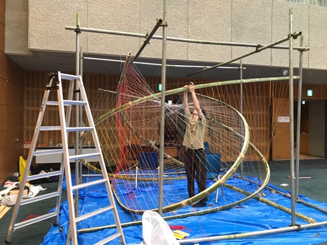

Profile

淡路 広喜
1996年 愛知県名古屋市生まれ
2015年- 東京大学教養学部
2017年- 東京大学工学部建築学科（加藤耕一研究室）
2019年- 東京大学工学系研究科建築学専攻修士課程（隈研吾研究室）
2020年- 東京大学工学系研究科建築学専攻修士課程（権藤智之研究室）
2020年- ミュンヘン工科大学建築学専攻修士課程（交換留学）
Prize
2019.10 『建築文化週間 学生グランプリ2019 銀茶会の茶席』 入賞、中村晃子・木村知弘賞
2020.1 『かながわ建築祭2020 茶室デザインコンペティション』 入賞
2020.2 『東京の現場を学生が彩る 仮囲いデザインコンテスト』 入選